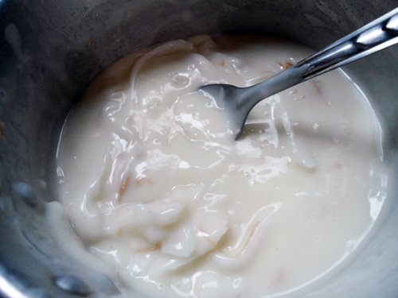

ปังมาก ! สูตรเค้กมะพร้าว หวานหอมไปกับครีมมะพร้าวอ่อนรสละมุน สลับชั้นกับเค้กมะพร้าวอ่อนเนื้อนุ่มฟู ขนมเค้กแบบไทย ๆ ทที่ใครได้ชิมก็ติดใจ
ส่วนผสม ตัวเค้กมะพร้าวอ่อน
• แป้งเค้ก 60 กรัม
• ผงฟู 1/4 ช้อนชา + 1/8 ช้อนชา
• น้ำตาลทรายป่น 35 กรัม
• เกลือป่น 1/4 + 1/8 ช้อนชา
• กะทิ 22 กรัม
• ไข่แดง 2 ฟอง
• น้ำมันพืช 22 กรัม
• น้ำมะพร้าว 16 กรัม
• ไข่ขาว 2 ฟอง
• ครีมออฟทาร์ทาร์ ปลายช้อน
ส่วนผสม ไส้ครีมมะพร้าวอ่อน
• เนื้อมะพร้าวอ่อน 1 ลูก
• เนื้อมะพร้าวอ่อน 1 ลูก
• น้ำตาลทราย 25 กรัม
• กะทิกล่อง 125 มิลลิลิตร
• น้ำมะพร้าว 75 มิลลิลิตร
• เกลือ 1/4 ช้อนชา
• แป้งถั่วเขียว 30 กรัม
• เนยสด 15 กรัม
วิธีทำไส้ครีมมะพร้าวอ่อน
► ผสมเนื้อมะพร้าวอ่อน น้ำตาลทราย กะทิกล่อง น้ำมะพร้าว เกลือ และแป้งถั่วเขียวมาผสมกัน ตั้งไฟอย่าให้แรงมากแล้วก็คนเรื่อย ๆ
ส่วนผสม ครีมสดสำหรับปาดหน้าเค้ก
• วิปปิ้งครีม 1 ถ้วยตวง
• วิปปิ้งครีม 1 ถ้วยตวง
• น้ำตาลไอซิ่ง 1 ช้อนชา
• น้ำมะพร้าว 1 ช้อนชา
วิธีทำไส้ครีมมะพร้าวอ่อน

► เมื่อคนจนข้นได้ที่ก็ปิดไฟ แล้วใส่เนยสดลงไป คนให้ละลายพอดีกัน
► ขูดมะพร้าวอ่อนให้เป็นเส้น ๆ จากนั้นก็นำมาหั่นตามชอบ พักทิ้งไว้
► ขูดมะพร้าวอ่อนให้เป็นเส้น ๆ จากนั้นก็นำมาหั่นตามชอบ พักทิ้งไว้
วิธีทำเค้กมะพร้าวอ่อน
► ร่อนแป้งกับผงฟูอย่างน้อย 2 รอบ
► ผสมส่วนของของเหลวเข้าด้วยกัน
► เทแป้งลงไปในของเหลวแบ้วคนเร็ว ๆ ให้เข้ากัน พอเข้ากันแล้วให้หยุดคน ไม่เช่นนั้นเค้กจะเหนียว
► ตีไข่ขาวให้พอขึ้นฟอง จากนั้นใส่ครีมออฟทาร์ทาร์ลงไป ค่อย ๆ ทยอยใส่น้ำตาลทีละน้อย ตีจนไข่ขาวตั้งยอดปานกลางเกือบแข็ง
► นำส่วนผสมไข่ขาวมาผสมกับแป้งที่ร่อนเตรียมไว้
► นำเทใส่พิมพ์ นำเข้าอบประมาณ 20 นาที
► เช็คสุกโดยการใช้มีดปลายแหลมจิ้มไปตรงกลาง ไม่มีอะไรติดออกมาแสดงว่าสุกแล้ว
วิธีทำครีมสด
► ผสมทุกอย่างให้เข้ากัน และตีให้ขึ้นฟู
► หั่นเค้กเป็น 2 ชั้น
วิธีประกอบตัวเค้ก
► ปาดไส้มะพร้าวลงไปตามชอบ จากนั้นก็ประกบเค้กทั้งสองส่วนเข้าด้วยกัน
► ทาครีมสดให้ทั่วหน้าเค้ก และราดเนื้อมะพร้าวอ่อนลงไปอีกที
► จากนั้นนำไปแช่เย็นให้แข็งตัว
ในที่สุดก็ได้เค้กมะพร้าวอ่อนครีมสดแล้ว... เป็นอย่างไรบ้างคะ หน้าตาน่ากินหรือเปล่าเอ่ย
ขอขอบคุณข้อมูลและภาพประกอบจาก
คุณ Yohan Nefia
Copyright © EAT&EAT nc. สงวนลิขสิทธิ์